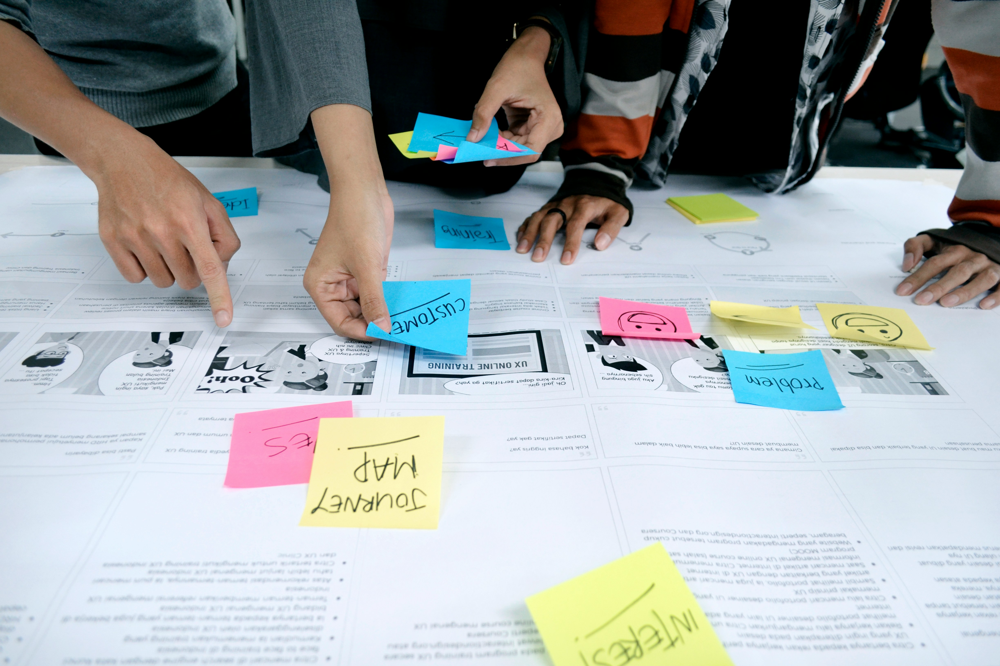

Skills

User Research
Proficient in conducting user research to uncover insights and inform design decisions.

User Empathy
Skilled in empathizing with users to understand their needs, motivations, and pain points, driving user-centered design solutions.

Task Flow Creation
Experienced in designing intuitive user task flows to streamline interactions and enhance user experiences.